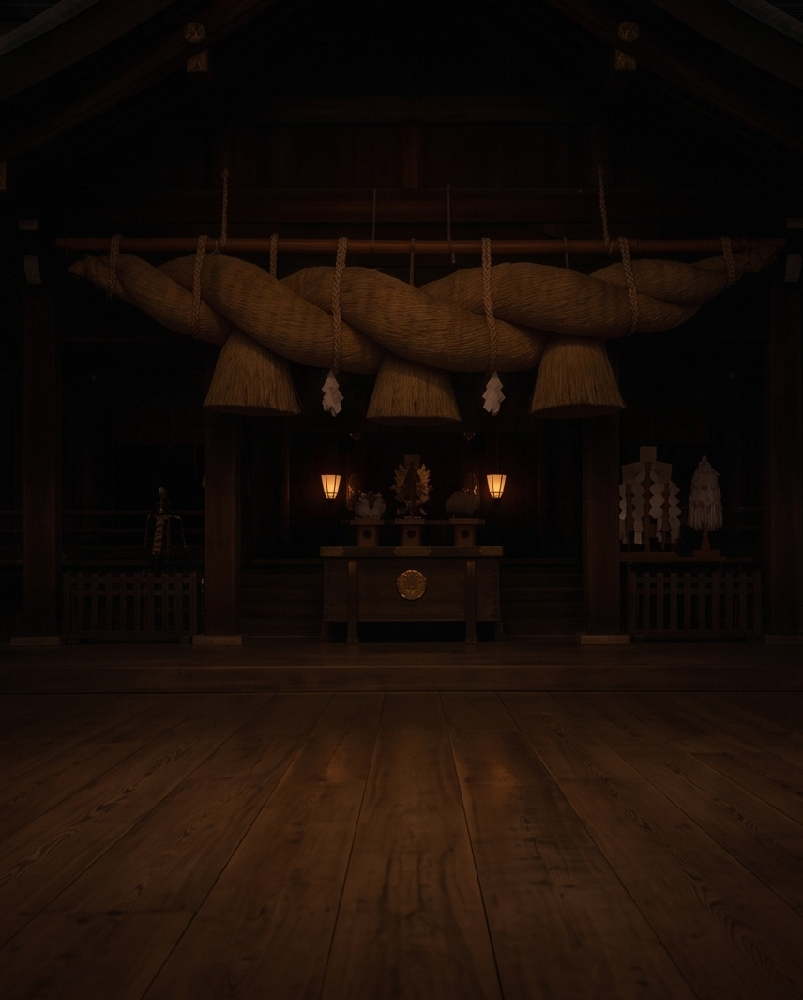
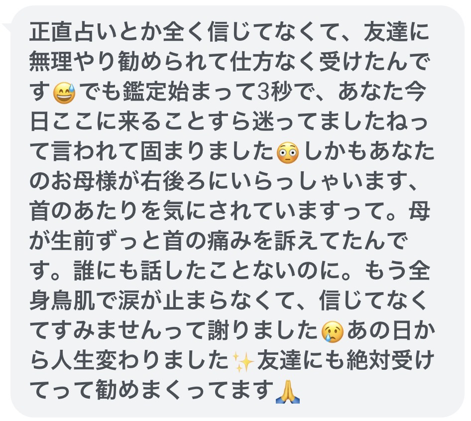
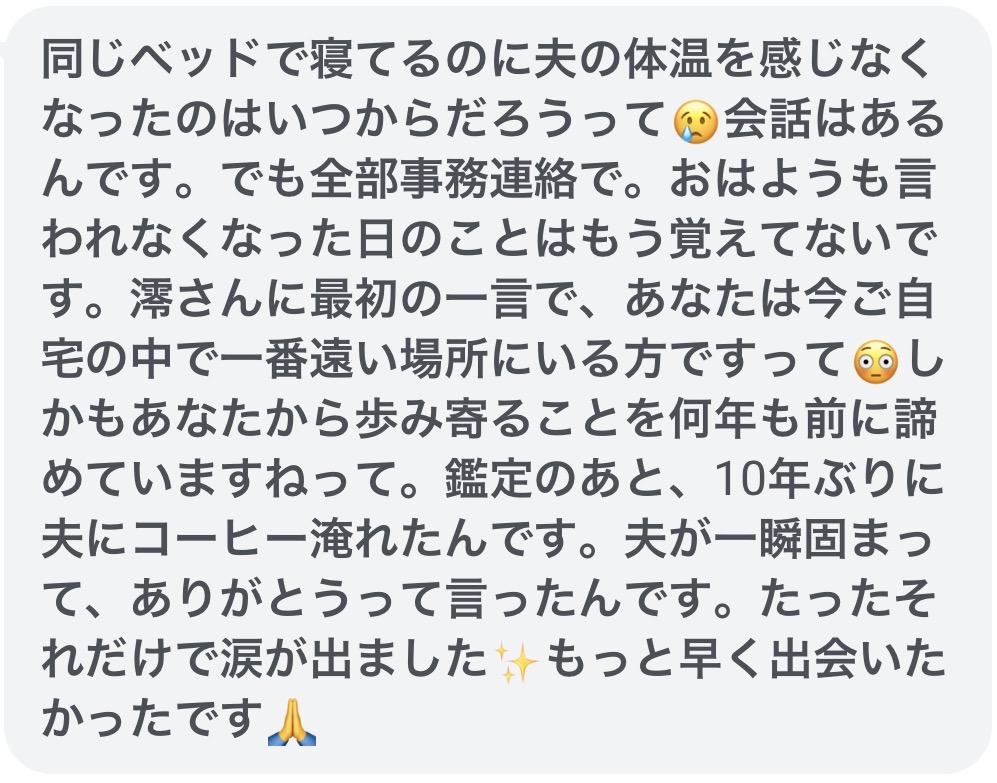
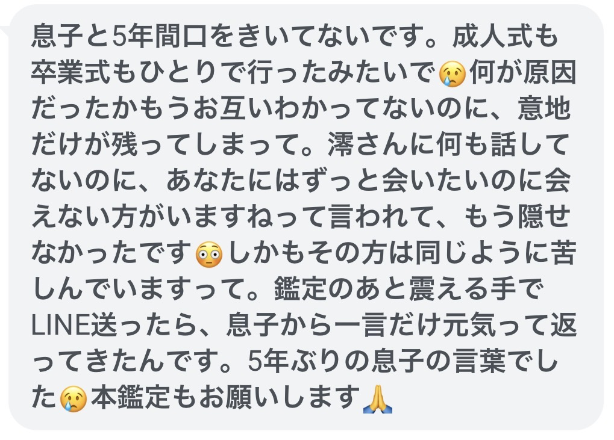
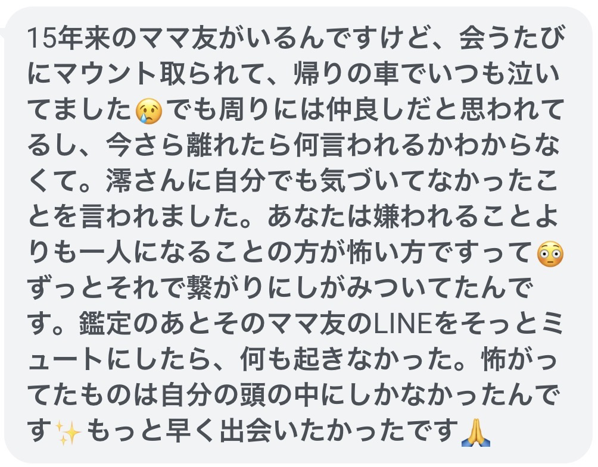
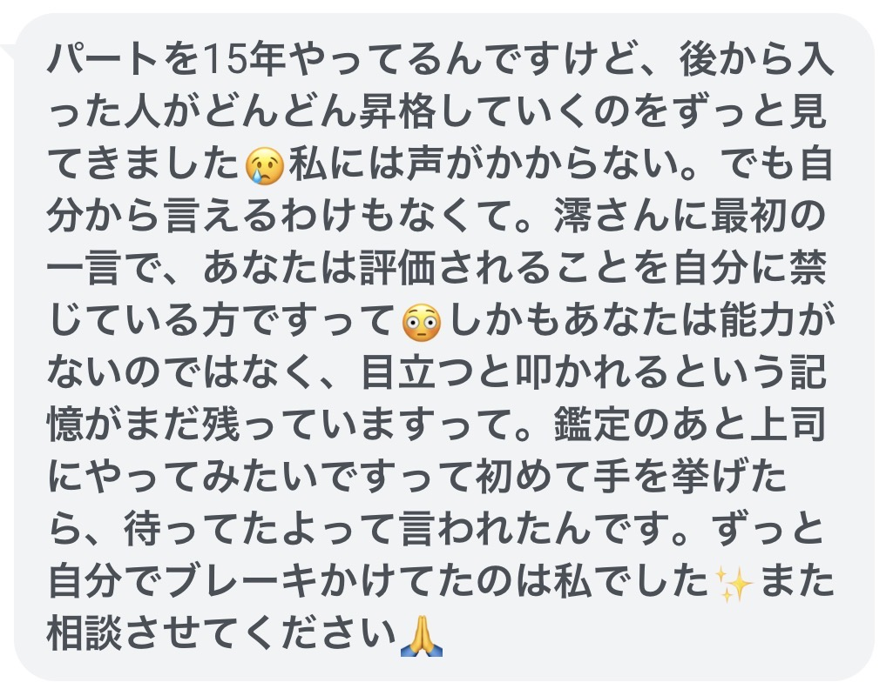
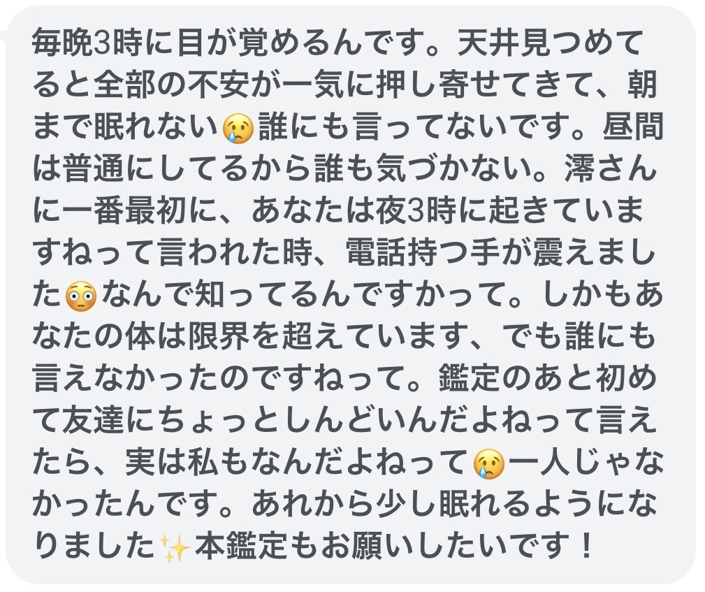
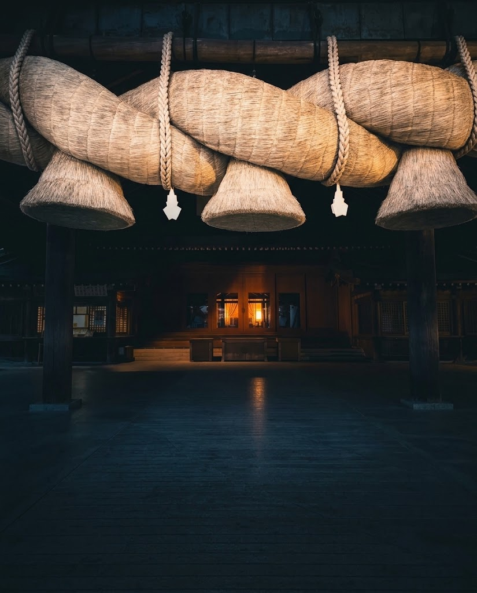
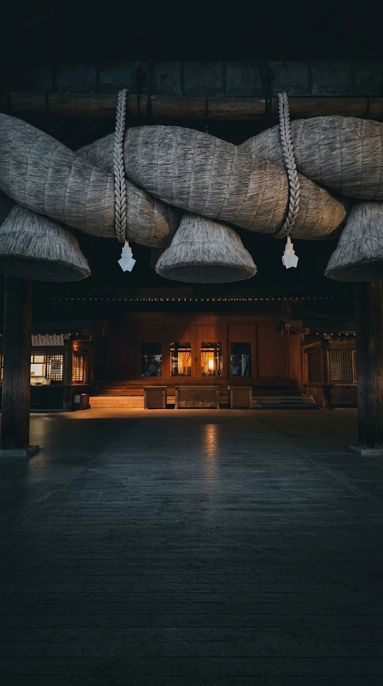

未来は、当てません。いま巡っている縁と流れを、視抜きます。
お受けできるのは 1日10名様まで
働いても働いても
暮らしが楽にならない
幸せになりたい気持ちはあるのに
「こんな私が」とためらってしまう
「大丈夫」と笑って返しながら
本当は誰かに助けてほしい
子どもに我慢ばかりさせている気がして
自分を責めてしまう
やさしい娘でいたいのに
実家からの着信に一瞬身構えてしまう
物心つく前から、人の後ろに「流れ」のようなものが視えておりました。
それが誰にでも視えるものではないと知ったのは、
学校で友人に伝えた日のことです。
「先生のうしろ、今日はすごく暗いね」
友人は目を丸くして、一歩あとずさりました。
——みんなには、視えていないのだ、と。
私の家は、九州で代々霊視を生業としてきた一族でした。
祖母は幼い私を「歴代でも別格」と呼びました。
年に一度、町の方々のために執り行われる一族の儀式が、
幼い私の誇りでした。
けれど十歳の夜、
その儀式が、力のあるひとりの方のためだけに行われていたことを知ってしまいました。
「誰にも言ってはいけないよ」と父は言いました。
視えてしまったものは、消せません。
——いつか一族を離れて、
受け継いだこの力を、本来あるべき形で使おう。
その決意が芽を出すまでに、八年かかりました。
十八の春、荷物ひとつで家を出て、
ご縁の結ばれる地・出雲へ渡りました。
この地に立った瞬間、
足の裏から温もりが伝わってきたのを、いまも覚えています。
——ここだ、と。
それから二十年あまり。
向き合ってきたご相談は、10,000件を超えました。
「鑑定のあと、運命の糸が変わった気がします」
そう言っていただいたことがあります。
けれど、私が変えたのではありません。
その方が、本来選ぶべき流れに気づき、
ご自身の意思で選び直された結果です。
その中で確かになったことが、ひとつだけあります。
人は、いま巡っている流れを知れば、
自分の力で歩き出せる、ということ。
優しい嘘は、一瞬だけ心を軽くします。
けれど次の朝には、同じ重さが戻ってまいります。
だから私は、未来を当てることはいたしません。
視えたことを、そのまま偽りなくお渡しする。
あの夜から自分に課してきた、唯一の約束です。
占いを仕事にしたのではなく、この道ひとつで生きております。
その方にいま何が起きていて、どの流れの中にいらっしゃるのか。
どのようなご縁が近づいていて、どのようなご縁がほどけていくのか。

この時期に何を選び、何を手放すとよいのか。
いま起きていることの意味を、言葉にしてお渡しするものです。
「信じてなくてすみませんって、謝りました」

「10年ぶりに、夫にコーヒー淹れたんです」

「5年ぶりの、息子の言葉でした」

「怖がってたものは、自分の頭の中にしかなかったんです」

「ずっと自分でブレーキかけてたのは、私でした」

「一人じゃなかったんです」

※実際にお受け取りになった方より、掲載の許可をいただいて紹介しています。

ひとりで抱えていたものに名前がつくと、それだけで重さが変わったとおっしゃる方が多くいらっしゃいます。
迷っていた道のどちらに流れが向いているのかが、見えてきたと言われることがあります。
滞っていたものがほどけていくと、人の巡りも静かに変わってまいります。
無料霊視で視られるのは、
いま巡っている流れの「入口」までです。
その先を深く視る本鑑定は、
有料でお受けしています。
19,800円→今だけ、9,800円
無料の範囲だけでも、受け取る意味はあります。

お受けできるのは、1日10名様までです。
お一人ずつ視させていただくため、それ以上はお受けできません。
本日分が埋まった場合は、翌日以降のお届けとなります。